Color y Degradados
En Photoshop, el color y los degradados son elementos fundamentales para el diseño y la edición de imágenes.
El color se puede aplicar de varias formas, desde herramientas de pincel hasta rellenos sólidos. Photoshop ofrece múltiples modelos de color como RGB, CMYK, y Lab, permitiendo una selección precisa mediante el Selector de color, paneles de muestras, o códigos hexadecimales.
Los degradados, por su parte, son transiciones suaves entre dos o más colores. Pueden ser lineales, radiales, de diamante, entre otros. Photoshop permite crear degradados personalizados, ajustar su dirección, opacidad y modo de fusión para lograr efectos variados.
Estas herramientas son esenciales para crear fondos, efectos de iluminación, dar profundidad a los diseños y mucho más.
Elegir Color
En Photoshop, elegir un color es un proceso esencial que se utiliza en una variedad de herramientas y funciones. A continuación, se describe cómo seleccionar colores de manera efectiva.
Cuentagotas
La herramienta Cuentagotas en Photoshop permite seleccionar y muestrear colores de una imagen de manera precisa. Esta herramienta se utiliza principalmente para capturar un color específico de cualquier área del lienzo y establecerlo como el color de primer plano o fondo.
- Acceso a la Herramienta: Para acceder a la herramienta Cuentagotas, se
pueden utilizar los siguientes métodos:
- Barra de herramientas: Haciendo clic en el icono del Cuentagotas, que
tiene la forma de una pequeña pipeta.
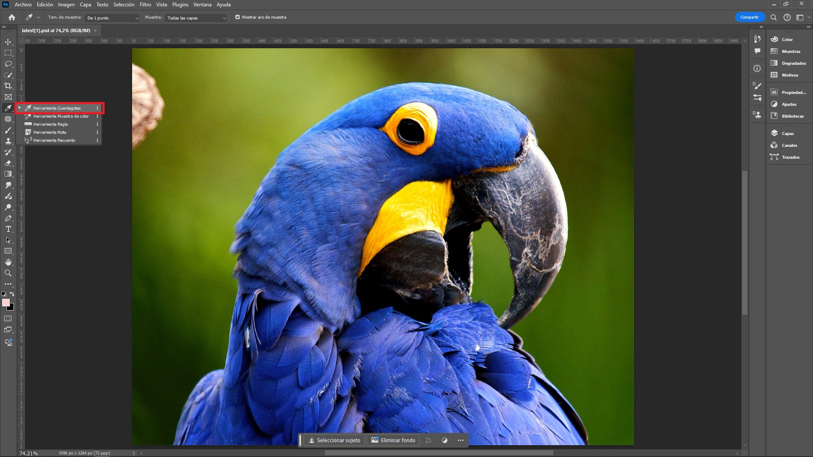
- Tecla de atajo: Presionando la tecla i en el teclado.
- Barra de herramientas: Haciendo clic en el icono del Cuentagotas, que
tiene la forma de una pequeña pipeta.
- Uso Básico: Una vez seleccionada la herramienta, al hacer clic en cualquier parte de la imagen, el color de ese píxel se convierte en el color de primer plano. Si se desea, este color también se puede configurar como el color de fondo.
- Opciones de la Herramienta: La herramienta Cuentagotas en Photoshop
ofrece
varias opciones que permiten un muestreo más preciso:
- Tamaño de Muestra: Se puede ajustar el tamaño del área de muestreo:
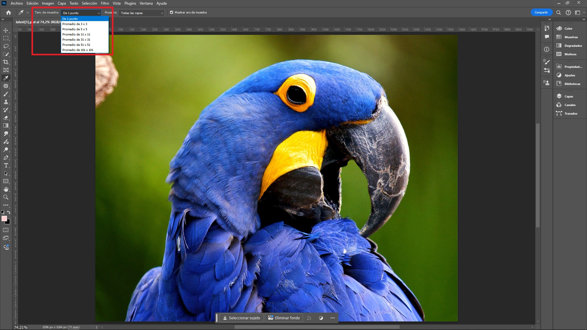
- De 1 punto: Captura el color exacto del píxel donde se hace clic.
- Promedio de 3x3: Toma un promedio del color en un área de 3x3 pixeles, lo cual es útil en imágenes con ruido o variaciones de color.
- Promedio de 5x5: Toma un promedio del color en un área de 5x5 píxeles.
- Promedio de 11x11: Toma un promedio del color en un área de 11x11 píxeles.
- Promedio de 31x31: Toma un promedio del color en un área de 31x31 píxeles.
- Promedio de 51x51: Toma un promedio del color en un área de 51x51 píxeles.
- Promedio de 101x101: Toma un promedio del color en un área de 101x101 píxeles.
- Muestra de Color: La herramienta permite elegir si el color se debe
muestrear de:
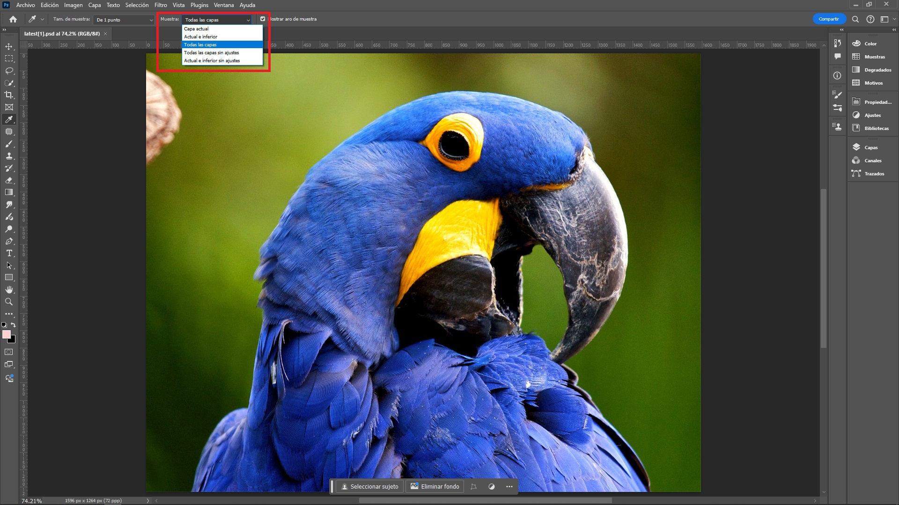
- Una sola capa (la capa activa).
- Actual e inferior: El color seleccionado es el que se ve en pantalla, es decir, la combinación de los colores de ambas capas.
- Todas las capas: El color seleccionado es el que se ve en pantalla, es decir, la combinación de los colores de todas las capas.
- Todas las capas sin ajustes.
- Actual e inferior sin ajustes.
- Tamaño de Muestra: Se puede ajustar el tamaño del área de muestreo:
- Visualización en Tiempo Real: Mientras se mueve el cuentagotas y se hace clic sobre sobre la imagen, se puede observar un círculo de muestra que muestra el color que se está seleccionando en tiempo real. Esta función facilita la identificación del color exacto que se necesita.
- Acceso a la Herramienta Muestra de Color: Con esta herramienta se pueden
ver los valores exactos del color en la ventana de Información. Aquí se presentan los valores en
diferentes formatos, como RGB, CMYK, LAB, entre otros, proporcionando una referencia detallada del color
seleccionado.
Para acceder a la herramienta muestra de color, se pueden utilizar los siguientes métodos:- Barra de herramientas: Haciendo clic en el icono del Cuentagotas y
luego en la opción Herramienta Muestra de Color.
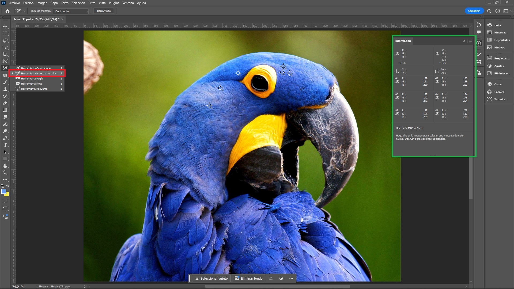
- Tecla de atajo: Presionando la tecla i en el teclado.
- Barra de herramientas: Haciendo clic en el icono del Cuentagotas y
luego en la opción Herramienta Muestra de Color.
Seleccionar Color de Primer Plano y Fondo
Cuadro de color en la barra de herramientas: En la barra de herramientas, se encuentran los cuadros de primer plano y fondo. Al hacer clic en cualquiera de estos cuadros, se abre el Selector de Color (Color Picker), donde se puede elegir un color.
El color puede seleccionarse en el Espectro de Colores utilizando el regulador ubicado a la izquierda, o ingresando los los valores de color en los formatos HSB, RGB, LAB, CMYK o HEX en la sección derecha del Selector de Color (Color Picker).
Herramienta Color
La herramienta de color en Photoshop, accesible desde el menú principal en la opción Ventana > Color > o F6, es una función esencial para la gestión y selección de colores durante la edición de imágenes. Esta herramienta ofrece varias características importantes, que se encuentran en el Menu Hamburguesa de la ventana emergente de esta herramienta:
- Selector de Color: El panel de color permite al usuario elegir colores mediante un selector deslizante o introduciendo valores numéricos precisos para los modelos de color RGB (rojo, verde, azul), HSB (tono, saturación, brillo), o Lab. Esto facilita la selección exacta del color deseado, se lección por defecto.
- Cubo de Brillo: Este cubo es una representación tridimensional del espacio de color en el que se visualizan los diferentes niveles de brillo de los colores. Esta herramienta se utiliza principalmente en la Galería de Filtros y en ajustes avanzados como Filtros de Iluminación o Mapas de Degradado.
- Rueda de Colores: Esta herramienta visual que representa el espectro de colores de manera circular. Se utiliza principalmente para ayudar a los diseñadores y editores a seleccionar, comprender y combinar colores de manera efectiva.
- La Escala de Grises: Esta escala se refiere a una representación de imágenes en tonos de gris, donde cada píxel de la imagen se describe solo por su intensidad de luz, sin información de color.
- Reguladores RGB, HSB, CMYK, Lab y de Colores WEB: Estos reguladores son diferentes modelos de color que permiten a los usuarios seleccionar y manipular colores de diversas maneras según sus necesidades específicas.
Muestras de Color
En Photoshop, las muestras de color son una herramienta esencial para trabajar con colores de manera precisa y eficiente. Permiten guardar y acceder rápidamente a colores específicos que se usan frecuentemente en un proyecto.
¿Qué Son las Muestras de Color?
Son pequeños cuadrados de color que almacenan valores numéricos exactos (como RGB, CMYK, HSB, etc.) de un color particular. Se puedes crear una biblioteca de muestras para reutilizarlas en diferentes diseños o compartirlas con otros.
Acceso al Menú de Muestras
Abrir el Panel de Muestras: Ir a menú principal y elegir opciones Ventana > Muestras >.Crear una Muestra de Color
- Abrir el Panel de Muestras.
- Seleccionar un Color: Usa la herramienta Cuentagotas para seleccionar un color de una imagen o usar el Selector de Color para elegir un color específico.
- Añadir una Muestra: Una vez que se tenga el color seleccionado, hacer
clic en el icono de Nueva Muestra en la parte inferior del
panel de muestras. Esto añadirá el color seleccionado como una nueva muestra.
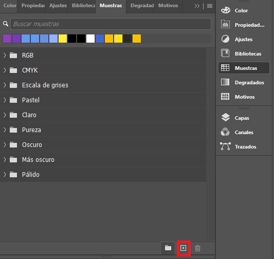
- Nombrar la Muestra Nueva: Se abrirá un cuadro de diálogo donde puede
nombrar la nueva muestra y añadirla al panel.
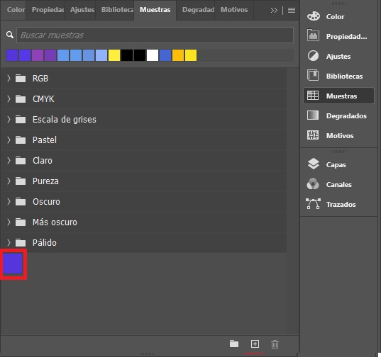
Crear un Grupo de Muestras de Color
- Abrir el Panel de Muestras: Como se explicó antes.
- Escoger Opción de Grupo de Muestras: En el panel de Muestras de Color hacer click en el ícono
de capeta.
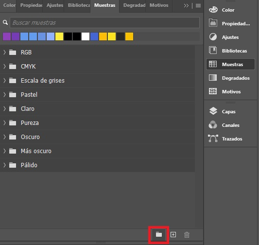
- Nombrar el Grupo: Se abrirá un cuadro de diálogo donde puede nombrar la
nueva carpeta y añadirla al panel.

- Crear una Muestra Personalizada.
- Agregar la Muestra: Mantener presionado el botón del ratón sobre el color
recién creado y arrastrarlo hasta la carpeta donde se desea guardar.
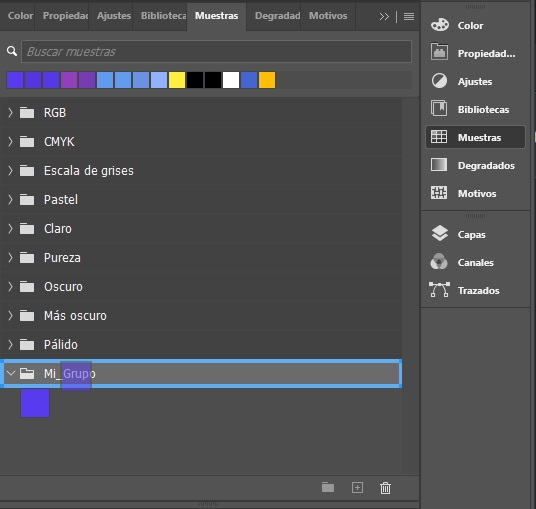
Exportación e Importación de Muestras
Es posible exportar e importar las muestras como un archivo .aco (Adobe Color Swatch) y compartirlas con otros usuarios de Photoshop. Estas opciones se encuentran en el menú desplegable, representado por un icono de tres líneas horizontales (comúnmente conocido como "menú hamburguesa"), situado en la esquina superior derecha del panel de muestras
Creación de Degradados
Para crear degradados en Photoshop, se pueden seguir varios métodos dependiendo del efecto deseado.
Herramienta Degradado (Gradient Tool)
- Seleccionar la herramienta:
- En la barra de herramientas seleccionar la Herramienta Degradado.
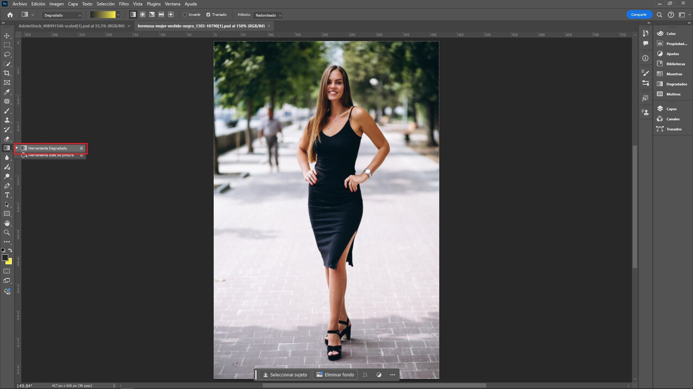
- La forma rápida de seleccionarla es presionando la tecla g.
- En la barra de herramientas seleccionar la Herramienta Degradado.
- Elegir el Tipo de Degradado: En la barra de opciones ubicada en la parte
superior, seleccione el tipo de degradado deseado. Las opciones disponibles, ordenadas de izquierda a
derecha, son: lineal, radial, angular, reflejado y diamante.
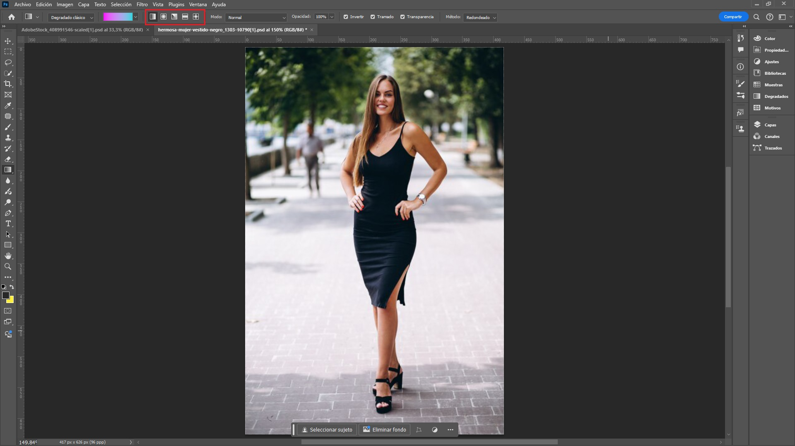
- Elegir los Colores: Hacer clic en la muestra de degradado en la barra de
opciones para abrir el editor de degradado. Aquí se pueden seleccionar los colores de inicio y final,
así como agregar puntos intermedios para colores adicionales.
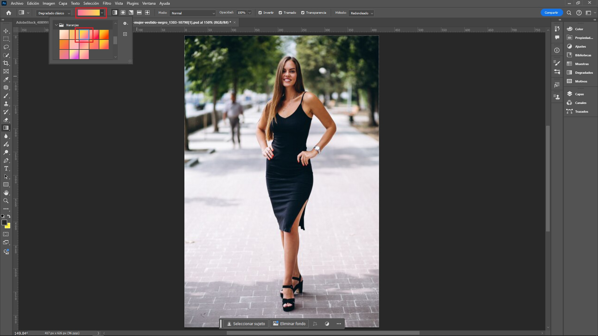
- Aplicar el Degradado: Hacer clic y arrastrar en el lienzo para aplicar el
degradado. La dirección y longitud del arrastre determinarán cómo se despliega el degradado.
Resultado Final: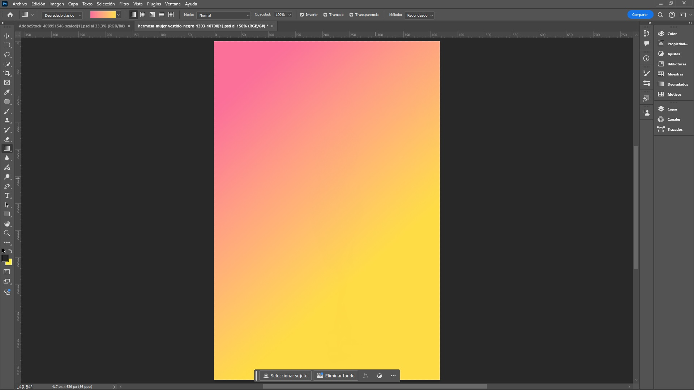
Degradado en una Capa de Relleno (Gradient Fill Layer)
- Crear una nueva capa de degradado: Ir a Capa > Nueva capa de relleno > Degradado >. Esto creará una capa
de degradado no destructiva.
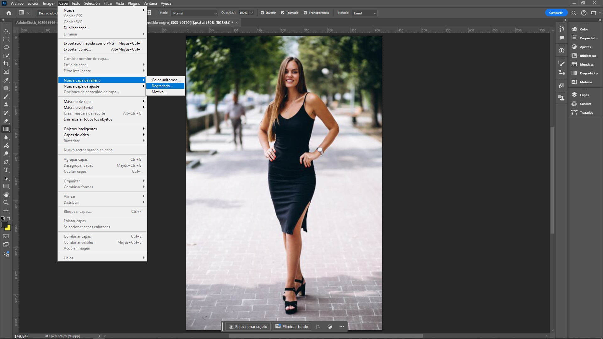
- Nombrar la Muestra Nueva: Se abrirá un cuadro de diálogo donde puede asignar a la nueva capa un nombre y añadirla al panel de capas.
- Ajustar las Opciones: En la ventana emergente se tiene las mismas
opciones para configurar el degradado como en el caso de la Herramienta Degradado.
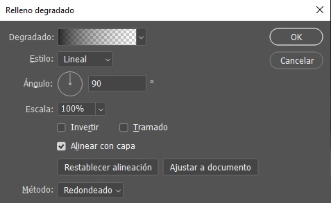
- Degradado: Elegir entre diferentes tipos de degradado.
- Estilo: Escoger entre los estilos de degradado entre los siguientes: lineal, radial, ángulo, reflejado y diamante.
- Ángulo: Ajustar el ángulo del degradado girando la línea de degradado en la vista previa.
- Escala: transición de los colores, entre más alto este valor la transición es más suave.
- Invertir: invierte los colores.
- Alinear con capa: Alinea la capa del degradado con la capa inmediatamente inferior.
- Aplicación del Degradado: Mantener presionado el botón izquierdo del
ratón desde el punto de inicio deseado y arrastrarlo hasta el punto final, soltándolo cuando se alcance
la posición deseada.
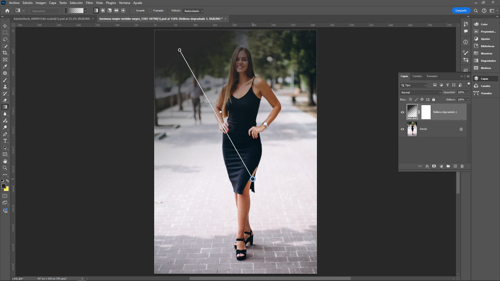
- Editar el Degradado: Si es necesario, hacer doble clic en la miniatura de
la capa de degradado en la paleta de capas para reabrir las opciones y hacer ajustes.

- Ajustar las Opciones: En la ventana emergente se tiene las mismas opciones para configurar el degradado como en el caso de la Herramienta Degradado.
- En este caso se ha escogido Invertir, como se puede ver los colores se
han
invertido:
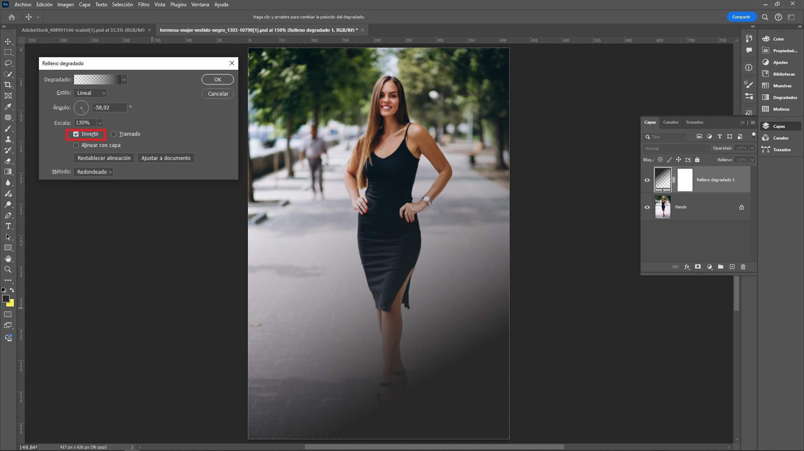
Consejos Adicionales
- Degradados personalizados: Al crear un degradado personalizado en el editor de degradados, es posible guardar el degradado para usarlo en futuros proyectos.
- Ajustes de opacidad: Se pueden ajustar las opacidades de los colores en los degradados para obtener transiciones más suaves o más drásticas.
- Uso de capas: Es recomendable aplicar degradados en capas separadas para mantener la flexibilidad en la edición.